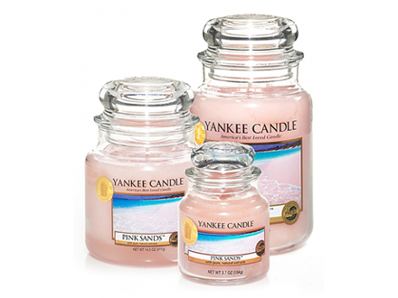
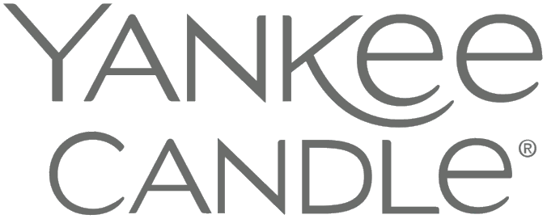
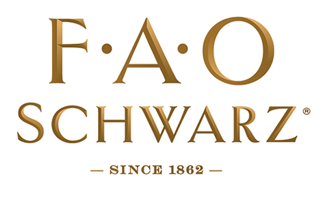

홈 > 브랜드 매거진 > 양키캔들
양키캔들
양키캔들(Yankee Candle)은 1969년 미국에서 시작된 향초 제조·소매 브랜드이다.
산업 분야 홈·라이프스타일 · 공개 등급 자료 기반 · 브랜드 평가 4.3 ★


한눈에 보는 브랜드
양키캔들(Yankee Candle)은 1969년 미국 매사추세츠에서 출발한 향초 브랜드다. 당시 16세였던 마이클 키트리지(Michael Kittredge)가 녹인 크레용으로 어머니 선물용 첫 향초를 만든 것이 시작이었다.
유리 자(jar)에 담긴 향초가 대표 형태로 굳어지며 미국 최대 규모의 수제 향초 회사로 성장했고, 현재는 종합 소비재 기업 뉴웰브랜즈(Newell Brands) 산하의 가정용 방향(芳香) 브랜드로 운영된다. 발삼앤시더 같은 시즌 향과 대형 자 캔들로 북미 가정 시장에서 오랜 인지도를 쌓아 왔다.
브랜드 관점
향초 시장의 핵심 경쟁 구도는 양키캔들과 배스앤바디웍스(Bath & Body Works)의 양강 구도로 요약된다. 시장 분석에서 양키캔들, 배스앤바디웍스, 조말론 등 상위 브랜드가 전체의 절반 안팎을 점유하는데, 배스앤바디웍스가 시즌·한정판 컬렉션과 매장 체험으로 고객을 끌어들인다면, 양키캔들은 두꺼운 유리 자에 담긴 대용량 향초와 긴 연소 시간을 무기로 삼는다.
특히 '자(jar) 캔들'이라는 형식 자체를 대중에게 각인시킨 대명사적 위치가 차별점이며, 발삼앤시더·클린코튼 등 시그니처 향이 재구매를 이끈다. 뉴웰브랜즈 산하라는 점은 안정적 유통망과 동시에 모기업 전체 실적 부진의 영향을 함께 받는다는 양면성을 뜻한다.
한국에서는 백화점·온라인·면세 채널을 통해 선물용 향초로 인지되어, 계절감 있는 향과 인테리어 소품 수요와 맞물려 소비된다.
시작과 성장
시작은 1969년 크리스마스였다. 매사추세츠 홀리오크 출신의 16세 소년 마이클 키트리지는 어머니 선물을 살 형편이 못 되자 크레용을 녹여 집에서 첫 향초를 직접 만들었다.
이웃들이 구매를 원하면서 그는 생산량을 늘렸고, 초기 '캔들 바이 마이클 키트리지'라는 이름을 거쳐 '더 양키 캔들 컴퍼니'로 정식화했다. 고교 친구들의 도움으로 사업 기반을 다진 뒤, 부모의 요청에 따라 제조·창고 시설을 홀리오크의 버려진 방직 공장으로 옮겨 규모를 키웠다.
이후 대형 소매와 사우스디어필드 플래그십(양키캔들 빌리지)을 통해 미국 최대 수제 향초 회사로 자리 잡았다. 1998년 키트리지는 약 4억 달러에 투자사에 회사를 매각했고, 2013년에는 자든(Jarden)이 약 17억 5천만 달러에 인수했다.
자든이 2016년 뉴웰 러버메이드와 합병하면서 양키캔들은 최종적으로 뉴웰브랜즈 산하로 편입되었다.
브랜드 아이덴티티
브랜드 정체성의 중심에는 '향으로 채우는 집'이라는 가정적 가치가 있다. 시각적으로는 두꺼운 투명 유리 자에 부착된 직사각형 라벨, 향 이름을 큼직하게 적은 클래식한 서체와 무늬가 핵심 식별 요소로, 라벨 자체가 로고처럼 기능한다.
주요 타깃은 집 안 분위기와 계절감을 향으로 연출하려는 가정 소비자와 선물 구매층이다. 브랜드 보이스는 화려함보다 친근하고 따뜻한 생활 밀착형 어조를 유지하며, 발삼앤시더 같은 향 이름과 계절 컬렉션으로 정서적 연상을 전달한다.
창업 일화에서 비롯된 손으로 만든 진정성의 서사가 정체성의 바탕에 깔려 있다.
제품과 서비스
대표 품목은 대형 유리 자에 담긴 오리지널 자 캔들로, 22온스 클래식은 110시간 이상 연소된다. 이 밖에 시그니처 텀블러와 3심지 캔들, 왁스 워머와 함께 쓰는 향 왁스멜트, 미니 봉헌초, 차량용 방향제, 룸 스프레이, 벽면 플러그인 등으로 구성된다.
시그니처 향으로는 발삼앤시더, 클린코튼 등이 꼽힌다. 가격대는 미디엄 자가 20달러대 중반 수준이며, 자사몰·대형 마트·온라인·면세 등 폭넓은 채널로 판매된다.
현재 상태
현재 양키캔들은 애틀랜타에 본사를 둔 뉴웰브랜즈 산하 브랜드다. 양키캔들 단독 매출은 별도 공개되지 않아 미공개이며, 모기업의 가정용 방향 부문 분기 매출은 약 1억 3천6백만 달러로 전년 대비 17% 감소했다.
2026년 1월부터 북미 매장 약 20곳을 닫고 글로벌 인력 900여 명을 줄이는 구조조정이 진행되지만, 사우스디어필드 플래그십과 웨이틀리 공장 운영은 유지된다.
타임라인
BI/CI 변천사
함께 읽을 브랜드
 홈·라이프스타일 · 편집 검수빅
홈·라이프스타일 · 편집 검수빅빅(BIC)은 1945년 마르셀 비크가 프랑스에서 설립한 일회용 소비재 브랜드다. 볼펜·라이터·면도기를 중심으로 저가·대량생산 일상용품을 만들며, 1950년 출시한...
 홈·라이프스타일 · 자료 기반Pottery Barn
홈·라이프스타일 · 자료 기반Pottery Barn포터리 반(Pottery Barn)은 1949년 시콘 형제가 미국에서 시작한 홈퍼니싱 소매 브랜드다. 가구·인테리어 소품을 다루는 고급 홈퍼니싱 체인으로, 윌리엄스소...
 기술·전자 · 편집 검수미니
기술·전자 · 편집 검수미니미니는 작은 크기를 약점이 아니라 개성과 태도의 언어로 바꾼 자동차 브랜드다. 미니의 디자인은 실용성만을 말하지 않는다. 작음, 경쾌함, 도시적 감각을 결합해 차체...
OH
오늘의집
홈·라이프스타일 · 자료 기반오늘의집오늘의집(Ohou)은 버킷플레이스가 운영하는 한국 최대의 인테리어·홈 라이프스타일 플랫폼으로, 2014년 시작됐다.
홈·라이프스타일 · 자료 기반Cuisinella퀴진엘라(Cuisinella)는 1992년 프랑스 슈미트 그룹이 론칭한 맞춤형 주방·욕실·수납가구 브랜드다. 합리적 가격대를 겨냥한 슈미트 그룹의 자매 브랜드다.

홈·라이프스타일 · 자료 기반FAO SchwarzFAO 슈워츠(FAO Schwarz)는 1862년 프레더릭 A. O. 슈워츠가 설립한 미국의 장난감 전문 소매 브랜드다. 미국에서 가장 오래된 완구 소매로 꼽히며 뉴...
Ki
Kit
브랜드·비즈니스 · 편집 검수KitKit는 2025년에 기록된 Designed by Koto 계열의 브랜드 아이덴티티 사례입니다. Koto, Hot Type가 아이덴티티 작업의 디자이너로 기록되어 있...
 기술·전자 · 자료 기반라인
기술·전자 · 자료 기반라인라인(LINE)은 2011년 네이버 일본법인이 출시한 모바일 메신저로, 일본·대만·태국 등에서 국민 메신저로 자리 잡았다. 현재 운영사는 LY Corporation이...